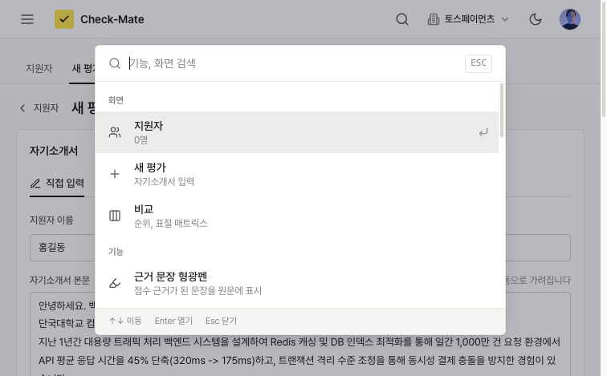

제3장. 구현 결과 및 실현 가능성
심사기준 3. 실현 가능성3.1 Cloud Run 상용 배포 서비스 6단계 사용자 여정 (End-to-End)
현재 GCP Cloud Run 라이브 서비스(https://hr-evaluator-frontend-pt3ki5ggua-du.a.run.app/)에서 구동되는 실제 워크플로우 화면입니다.
Step 1. 지원자 목록 & ⌘K

테넌트별 지원자 카드 및 단축키 탐색
Step 2. 7종 PII 마스킹

업로드 즉시 성명·연락처 로컬 가명화
Step 3. 1:1 형광펜 팩트체크

Fuzzy 매칭 기반 원문 근거 바인딩
Step 4. HITL 인간 점수 보정

평가관 직접 점수 재조정 및 최종 결재
Step 5. 1-Click 실시간 공유

암호화 Share 링크로 면접관 즉시 공유
Step 6. 실시간 에이전트 분석

4대 에이전트 순차·병렬 오케스트레이션
3.2 정량적 실측 성능 및 업무 효율 개선 효과
| 핵심 평가지표 | 도입 전 (수작업/기존 도구) | Check-Mate 도입 후 | 개선 효과 |
|---|---|---|---|
| 서류 1건 검토 시간 | 15분 ~ 20분 | 1.5분 이내 | 90% 시간 단축 |
| 근거 문장 및 리스크 탐색 | 수작업 정독 및 메모 (3~5분 소요) | Fuzzy 매칭 자동 하이라이트 | 즉각적 시각 검증 |
| 면접 질문 도출 및 공유 | 인쇄 및 수기 취합 (30분 이상) | 원클릭 공유 링크 & CSV 내보내기 | 협업 지연 제거 |